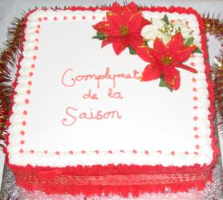

Sèrvice dé Neu Léçons et Cantiques dé Noué
dans l'Églyise dé St.-André
Sanm 'di lé 4 d'Dézembre 2004 à 7h30 du sé
Mde Joan Tapley s 'en va faithe la prièthe et annoncer les cantiques
Jé vai les vailes dé trais batchieaux
(chanté par les mousses—auve l'aîgue d'la congrégâtion)
Priéthe
Notre Père (chanté par lé Tchoeu)
Ouïy'-ous la chanson dé jouaie?
Preunmié Léçon: Genêse Ch.3 vv. 8 à 15 - Mde Enid de Gruchy
Atout jouaie dans l'temps jadis
Deuxième Léçon: Esaie Ch.9 vv. 2 à 7 - Dlle Sophie Banks
Oh Tchi douoche niet
Traîsième Léçon: Esaie Ch.11 vv. 1 à 5 - M David Huelin
Sus l'coup d'mîniet les bèrgers ouïtent
Quatrième Léçon: St.-Luc Ch.l vv. 26 à 38 - Mde Val Amy
O Arbre dé Noué! (chanté par l's Êtudgiants)
Chîntchième Léçon: St.-Matchi Ch.l vv. 18 à 23 - M Ken Syvret
Des Bèrgers gardaient lus troupieaux
Siêxième Léçon: St.-Luc Ch.2 vv. 1 à 7 - Mde Mariane de Bondy
Dans la Cité du Rouai Dâvi
Septième Léçon: St.-Luc Ch.2 vv. 8 à 20 - M Michael Vautier
Solo: (Mde. June Le Rossignol)
Huitième Léçon: St.-Matchi Ch.2 vv. 1 à 11 - M François Le Maistre
À Travèrs les Montangnes
Neuvième Léçon: St.-Jean Ch.l vv.1 à 14 - Mde Angela Le Pavoux
Lé housse et lé hièrru (Lé Tchoeu seulement)
Èrmèrques et Collecte en faveur dé l'Églyise
Qué Dgieu vos garde heutheurs, bouannes gens
Bénédiction

Viyiz étout: